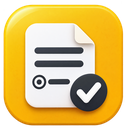

YAFORMCREATOR · РАСШИРЕНИЕ
Подключение к Яндексу
Каждый пользователь подключает свой аккаунт и организацию. Токен используется только расширением и не передаётся сайту.
OAuth не создаёт организацию и не выдаёт права администратора. Для API нужны Формы для бизнеса. Федеративный аккаунт может потребовать ручной IAM-токен.